P2
Framework
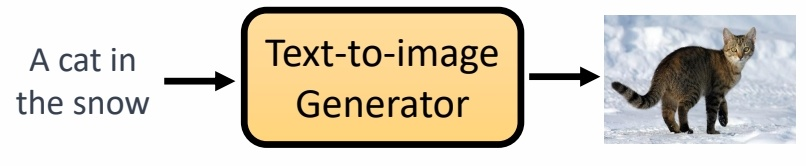
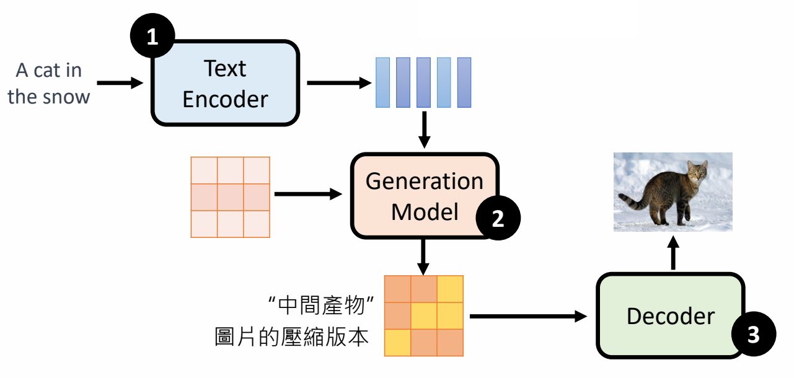
P3
Stable Diffusion
https://arxiv.org/abs/2112.10752
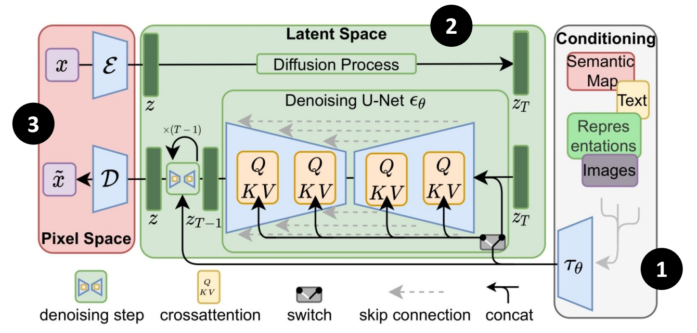
P4
DALL-E series
https://arxiv.org/abs/2204.06125
https://arxiv.org/abs/2102.12092
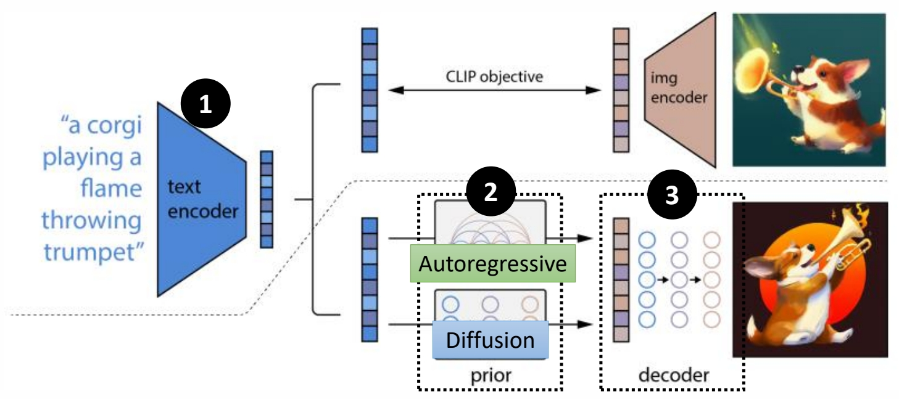
✅ DALL-E 的生成模型有两种：Auoregressive 和 Diffusion.
P5
Imagen
https://imagen.research.google/
https://arxiv.org/abs/2205.11487
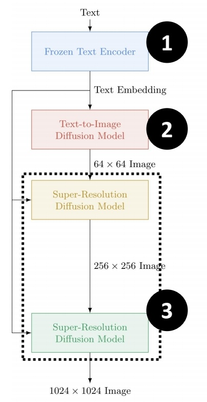
✅ Decoder 也是一个 Diffusion Model，把小图变成大图。
P6
Text Encoder
✅ Text Encoder 可以用 GPT．BERT 等预训练模型。
P7
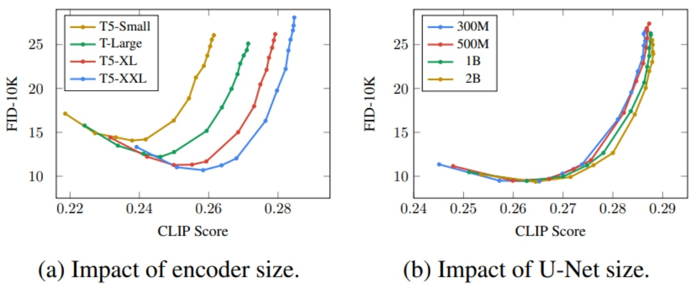
https://arxiv.org/abs/2205.11487
✅ 评分说明：FID 越小越好，CLIP score 越大越好。因此右下角最好。
✅ Text Encoder 的大小对结果影响很大。Diffusion Model 的大小没那么重要。
怎么评价图像生成的好坏
P8
Fréchet Inception Distance (FID)
https://arxiv.org/abs/1706.08500

✅ CNN＋Softmax 是一个预训练好的图像分类网络，取 softmax 上一层做为图像的 feature.
✅ 取大量真实图像的 feature 和预训练模型生成的图 feature.
✅ 假设两类图像的 feature 各自符合高斯分布，计算两个分布的距离。
✅ 优点：评价结果与人类直觉很接近，缺点：需要大量 sample.
P9
Contrastive Language-Image Pre-Training (CLIP)
https://arxiv.org/abs/2103.00020
400 million image-text pairs
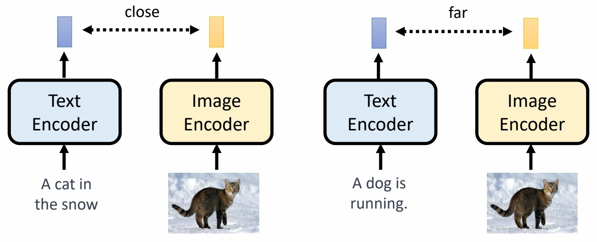
✅ CLIP Score，衡量与文字的匹配度。
P10
Decoder
Decoder can be trained without labelled data.
P11
「中间产物」为小图
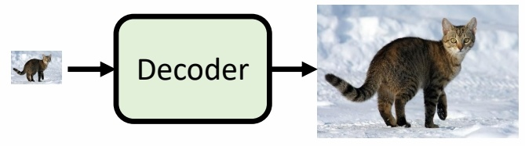
P12
「中间产物」为「Latent Representation」
Auto-encoder
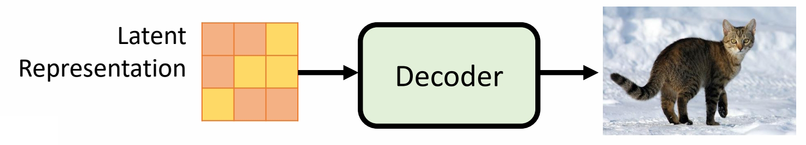
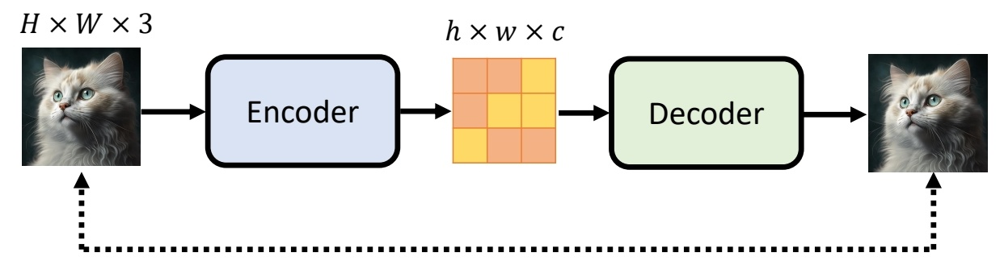
P13
Generation Model
Forard Process
P14
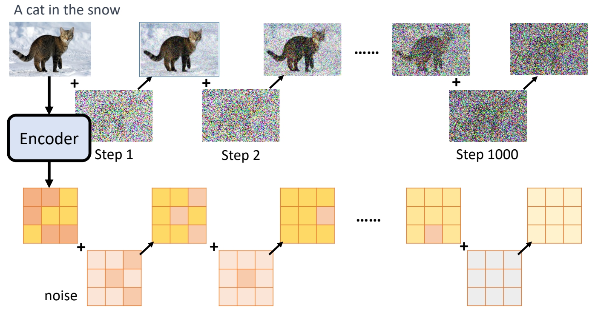
✅ Forard Process：noise 加下 “中间产物”或latent code上。
Reverte Process.
P15
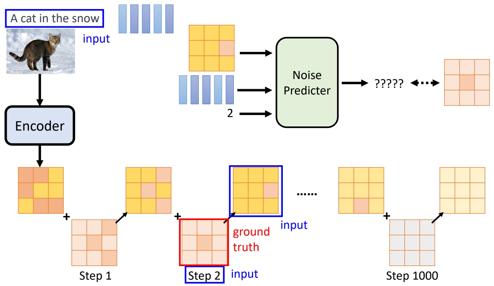
Inference
P16
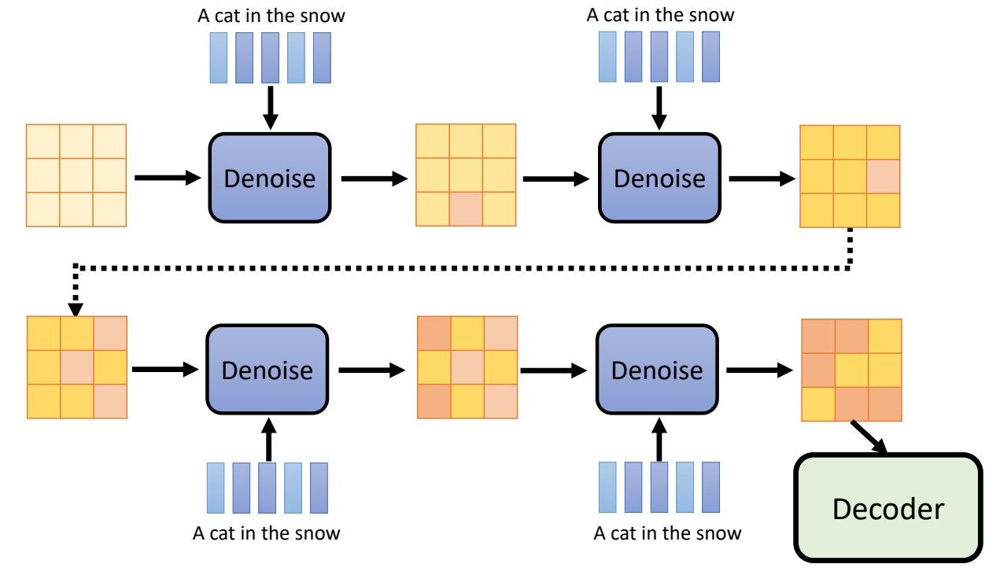
本文出自CaterpillarStudyGroup，转载请注明出处。
https://caterpillarstudygroup.github.io/ImportantArticles/